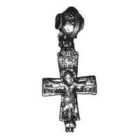
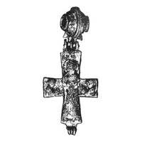

Catalog › CE-0948 · KOR2003-II.4.2.1
Encolpion de argint aurit: Răstignirea pe față, Înălțarea cu Maica Domnului și arhangheli pe revers
sec. nu mai târziu de prima treime XIII (1201–1300) · Vladimir pe Kliazma, regiunea Vladimir, Rusia · Muzeul-rezervație de Stat de Istorie, Arhitectură și Artă din Vladimir-Suzdal (VSMZ), Vladimir, inv. В-48510/121
double-sided reliquary cross (enkolpion), argint; c. nu mai târziu de prima treime XIII (1201–1300); found at Vladimir pe Kliazma, regiunea Vladimir, Rusia; kept at Muzeul-rezervație de Stat de Istorie, Arhitectură și Artă din Vladimir-Suzdal (VSMZ), Vladimir.




Identificare
- Categorie
- Encolpion bivalv (relicvar)
- Material
- Argint
- Tehnică
- Turnare în relief; Gravare (incizie); Aurire
- Stare
- Întreagă
- Dimensiuni
- Î 59 × L 39 mm
Iconografie
- Avers
- Neidentificat
- Descriere avers
- Encolpion întreg, în relief, cu capetele ramurilor drepte, ușor lărgite, și inel de agățare în formă de mărgea bitronconică goală, cu brâie în relief; în inel s-au păstrat resturi de șnur din mătase țesută împăturită în două. Axa verticală a feței crucii are capătul de sus în formă de cheie, și un prag dreptunghiular la marginea de jos. Pe întreaga suprafață a valvei de față, figura în relief a lui Hristos răstignit, cu inscripții explicative. Marginea de sus a stâlpului vertical al lemnului crucii, cu inscripția NHKA, formează capăt în formă de cheie; ramura de jos are un suport cu trepte pentru picioarele lui Hristos.
- Revers
- Maica Domnului Orantă; Sf. Arhanghel Mihail
- Descriere revers
- Pe valva de revers e reprezentată scena Înălțării: pe verticală, imagine în relief a Maicii Domnului cu mâinile ridicate în fața pieptului, cu nimb obținut prin gravare; pe capetele laterale, figuri în relief, în profil, până la piept, ale arhanghelilor Mihail (ramura stângă) și Gavriil (ramura dreaptă), cu mâinile întinse către Maica Domnului.
- Inscripții
- IC XC NHKA РАППАТИЄ [?] (față); МР ΘΥ, М[И]ХА[И]Л[ОС], [ГА]ВРИА (revers)
- Limba
- Slavonă
Datare și atribuire
- Datare
- sec. nu mai târziu de prima treime XIII (1201–1300)
- Centru
- Necunoscut
- Tipologie
- Korzukhina–Peskova 2003, tip II 4 2
Descoperire
- Localitate
- Vladimir pe Kliazma
- Regiune
- regiunea Vladimir
- Țară
- Rusia
- Context
- Tezaur
- Anul
- 1993
Păstrare și referințe
- Colecție
- Muzeul-rezervație de Stat de Istorie, Arhitectură și Artă din Vladimir-Suzdal (VSMZ), Vladimir
- Nr. inventar
- В-48510/121
- Bibliografie
- G. F. Korzukhina, A. A. Peskova, Древнерусские энколпионы. Нагрудные кресты-реликварии XI–XIII вв., Sankt-Petersburg, 2003 [Korzukhina–Peskova 2003], p. 97, cat. nr. II 4 2/1, reprodusă la Табл. 45 (planșe, p. 287). Bibliografie citată în sursă: Жарнов 1994, 61–62; Жарнов 1997, 87–88, 90.
- Figura
- Табл. 45
- Planșe
- Korzukhina–Peskova 2003, Табл. 45 (planșă fără paginație proprie în PDF; p. 287 tipărită)
- Observații
- Datare după Peskova: sec. nu mai târziu de prima treime XIII. Circumstanțe: Descoperit în 1993 în timpul săpăturilor din partea de est a nucleului istoric al Vladimirului („Vecinii gorod”), pe teritoriul actualului cartier delimitat de străzile III Internaționala, Herzen, Cehov și Zlatovratski, în componența unui tezaur de obiecte de cult creștin găsit într-o groapă mică, în fundul pivniței unei locuințe incendiate în februarie 1238; crucea se afla într-o pungă de mătase cu șnur de gât, țesut cu aur, împreună cu alte obiecte din tezaur. Săpături ale Centrului de Stat pentru evidența, folosirea și restaurarea monumentelor din regiunea Vladimir (conducător Ju. E. Jarnov). Dimensiuni: înălțime 5,1–5,9 cm; grosimea valvelor 0,5–0,6 cm (în tipar „înălțimea valvelor”). Crucea e turnată cu folosirea unei forme de piatră, reliefurile retușate cu dalta; suprafața reliefurilor lipsite de aurire e serios corodată. Encolpionul nu se deschide: știftul broaștei a fost sfărâmat în vechime; crucea e umplută cu o masă maronie. Toate inscripțiile explicative sunt executate prin gravare adâncită; autorii notează „primele cinci litere în formă de ligatură complexă” la numele arhanghelului. Lectura MP ΘΥ și a numelor de verificat pe original. După Ju. E. Jarnov, reproducere remarcabilă, poate modificată, a unui model vechi, nu mai târziu de prima treime a sec. XIII; Răstignirea de pe față are toate trăsăturile iconografice ale variantei I a tipului. Coordonate: nu sunt date în sursă.
Citare: Corpus Encolpiorum, CE-0948, Encolpion de argint aurit: Răstignirea pe față, Înălțarea cu Maica Domnului și arhangheli pe revers, https://vitaliejosanu1979-ux.github.io/primul-meu-proiect/piese/KOR2003-II.4.2.1/ (accesat 2026-10-17).